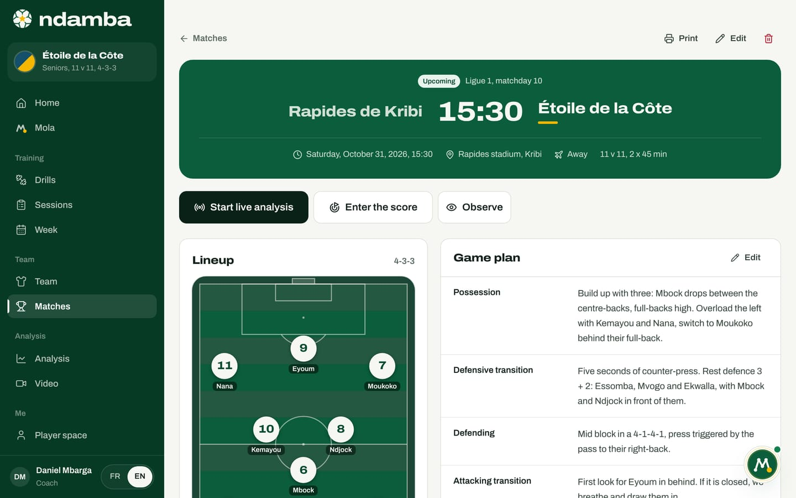

Live analysis
The live tagger, its buttons and their codes, keyboard shortcuts, the clock and periods, corrections, the phone layout, and a simple method for tagging a match from the touchline, even with a volunteer parent.
10 min read
Most coaches on the continent have no analyst and no raised camera. They have a phone and a touchline. Ndamba was built for them: a dark screen, big buttons, one tap per action, and the Njangi Index calculated while the match is being played. By half-time you already know whether your team is possessing with purpose. And because everyone tags with the same buttons and the same definitions, a match tagged in Douala can be compared with a match tagged in Bafoussam. That is where a shared measurement begins.
Open the tagger
There are three ways in:
- on the match sheet, the Start live analysis button (it becomes Resume live analysis if the match is already under way);
- in Analysis, the To tag live section, with Go live or Resume live for each upcoming match;
- after the match, in the report, the Fix the tags button.


The tagger takes over the whole screen, with no menus. An upcoming match switches to Live, at the latest on the first tap. The cross at the top left (Leave live tagging) takes you back to Analysis; the match stays live and you can resume where you left off.
On the Free plan, as on Player Premium, which does not include the coaching tools, one match can be tagged live. From the second one, the button on the match sheet shows a padlock and the Unlimited live analysis with Coach Pro box offers See plans. In Analysis, the To tag live section says so too. And if you open the tagger another way, from a link or a bookmark for instance, the same box appears instead of the buttons. A match that already has tags is never blocked. Payments are not connected yet: activating a plan is a demonstration today (chapter 24).
The tagger screen

At the top: the score (your team on the left, the opponent on the right), the clock, the periods, then on a large screen Undo, Log, the eye to observe, the keyboard for help, the settings and Full time. In the centre are the buttons, grouped in five families: Possession, Danger, Fixation, Transitions and Opponent. Each button shows its counter: how many actions of that kind have been tagged so far.
On a large screen, the right-hand column shows the Live Index out of 100 with its rating (Possession without purpose, Solid Njangi and so on), the five sub-indices out of 20, eight counters (Passes attempted, Conservation (K), Lines broken, Progressive, Box, Losses, 5 s regains, Fixation actions) and the Match log with the latest tags.
On every tap, the button flashes, the phone vibrates if it can, and a short message confirms the action with the minute, for example "Pass 12’". When a tap adds other tags, the message says so too: "Goal 12’", followed by "Also added: Shot, On target".
The buttons and their codes
The definitions are those of chapter 32 of The Njangi Code, with no variation. They also appear in the tagger’s help.
| Family | Button | Code | Key | When to tap it |
|---|---|---|---|---|
| Possession | Pass | PASS_OK | 1 | Any pass that reaches a teammate |
| Possession | Pass lost | PASS_LOST | 2 | A pass intercepted, overhit or out of play; it also counts as a loss |
| Possession | Progressive | PROG | 3 | A pass or carry of at least 10 m towards the opponent’s goal |
| Possession | Line broken | LINE | 4 | The ball gets past a line of at least two opponents and reaches a teammate who controls it |
| Danger | Final third | FINAL3 | 5 | Ball controlled in the last 35 metres, once per entry |
| Danger | Box | BOX | 6 | Ball controlled in the opponent’s box |
| Danger | Shot | SHOT | 7 | Any shot, even blocked |
| Danger | On target | SHOT_IN | 8 | A shot that makes the keeper act or goes in |
| Danger | Goal | GOAL | 9 | A goal for us |
| Fixation | Pins two | FIX2 | F | A dribble or carry that draws two opponents, and we keep the ball |
| Fixation | Switch | SWITCH | S | The ball changes side after the block has been drawn |
| Transitions | Loss | LOSS | L | Any loss that is not a pass: duel, dribble, failed first touch |
| Transitions | Won back 5 s | REGAIN5 | K | Ball won back within 5 seconds of a loss |
| Transitions | Ball won | REGAIN | R | Interception, tackle, keeper save, ball given back |
| Opponent | Their shot | SHOT (them) | A | A shot by the opponent |
| Opponent | Their goal | GOAL (them) | B | A goal by the opponent |
A few rules come up all the time:
- One action, several buttons. A pass that moves the ball 15 metres forward is tagged Pass then Progressive. A pass that breaks a line is tagged Pass then Line broken, never Progressive as well. A forward carry is tagged Progressive or Line broken on its own. A switch is tagged Pass then Switch.
- One goal, one tap. Goal adds Shot and On target automatically, and On target adds Shot; likewise, Their goal adds Their shot. The confirmation message lists these additions. The score updates with Goal and Their goal.
- The 5-second window. After a Loss or a Pass lost, a yellow 5-second ring appears on Ball won, which reads "Won back! 5 s" and counts down. A tap inside the window counts as Won back 5 s. Count under your breath: one, two, three, four, five. The Won back 5 s button also lets you tag it directly.
The clock and the periods
- At kick-off, tap the clock (Start). Tap it again to Pause, then Resume.
- At half-time, tap 2nd: the first-half clock stops and keeps its time.
- At the start of the second half, tap the clock. The minutes carry on: the second half starts at the 46th minute of a 2 x 45 match.
- For extra time, use ET1 and ET2 (15 minutes each when halves last 40 minutes or more, shorter for small-sided formats).
When a period runs past its regular length, the clock holds at the end of the period and a red badge counts the added time; actions are timed, for example, "45+2’". If the clock was started late, the settings offer Adjust the clock, First half with minus 1 min, minus 10 s, plus 10 s and plus 1 min.
The clock is saved on the device: if the phone closes the tab or the page reloads, it picks up where it was. While it runs, the screen stays on when the browser allows it. Every tag is saved the moment you tap, even with no network; the Offline: everything is saved on the device. banner reminds you.
Fix things without stopping
Undo removes the last tap, with its whole group: undoing a Goal also removes its shot and shot on target, and the score goes back down. A message names the tap you undid, for example "Undone: Goal" (not one of the shots added with it) or "Undone: Pass".
Log opens the list of every tag, period by period, newest first: the minute, the button, and the player if known. The bin deletes a tag. Tap one of your team’s tags to bring up the shirt numbers and credit a player, or change the one credited.
The score can be fixed in the settings, under Fix the score, with plus and minus for each team.
Credit the actions to players
After each tap for your team, a strip appears at the bottom for 2.5 seconds: Who? followed by the action, then the shirt numbers of the match’s starters and substitutes. Tap a number: "Credited to no. 8". Ignore the strip, and the action stays with the team. These credits fill the Match contribution in the player file and the journey (chapter 10). They change nothing in the Njangi Index.
The tagger’s settings (Live settings) also offer:
- Credit players: show the shirt numbers after each tap, or not;
- Tag the opponent too: adds Their pass (Q), Their lost pass (W) and Their final third (E), which give possession share and field tilt in the report;
- Full screen.
The eye (Observe) opens the chapter 10 screen on top of the tagger, titled for example Observe, minute 34: the minute is already filled in, and the starters and substitutes are ready to pick.
On a phone

Hold the phone in portrait. At the top: the cross, the score and End. Below, the clock and periods, then an Index band with the five sub-indices as letters (Pr, Pe, Fi, Re, Co); tap it to open the Live Index. The buttons fill the rest of the screen, the most frequent ones larger. The bottom bar gives Undo, Log (with the number of tags), Observe, Help and Settings.
On a computer, the keyboard is faster still. Numbers work on the top row and on the numeric keypad, without Shift, even on a French keyboard.
| Key | Action |
|---|---|
| Space | Start or pause the clock |
| 1 to 9 | Pass, Pass lost, Progressive, Line broken, Final third, Box, Shot, On target, Goal |
| F, S, L, K, R | Pins two, Switch, Loss, Won back 5 s, Ball won |
| A, B | Their shot, Their goal |
| Q, W, E | Their pass, Their lost pass, Their final third (when the opponent is tagged) |
| U, Backspace, Ctrl+Z | Undo the last tag |
| J | Open the log |
| H, ? | Open the help |
| Esc | Close a panel |
End the match
At the final whistle, tap Full time (End on a phone). The End the match? window shows the score, which you can still adjust. Tap End and see the report: the match is marked as finished, the clock stops and the report opens (chapter 13). You can still make corrections: from the report, Fix the tags reopens the tagger with the banner "Match finished: new tags complete the report."
The touchline method
Who tags? Not the head coach: they have a match to manage. An assistant, a volunteer parent, an injured player or a substitute will do very well, provided they have read the table of codes and practised once on a training game or a video. The Njangi Code recommends tagging in pairs where possible: one follows the ball (Pass, Pass lost, Loss), the other tags everything else and counts the 5 seconds. As a pair, share a tablet or a computer.
Where to stand? Along the touchline, level with the halfway line, a little away from the bench so you are not caught up in the exchanges, and raised up if the ground allows: lines are easier to read from higher up. Brightness at maximum, Full screen on, battery charged.
Before kick-off. Check the lineup on the match sheet: the strip of shirt numbers uses the starters and substitutes. Open the tagger a few minutes before, and start the clock on the whistle.
What to tag first? Build up over a few matches:
- First match: Pass, Pass lost, Loss and Ball won (the 5-second window gives you the quick regains on its own), plus Goal and Their goal. Turn off Credit players.
- Next: Progressive, Line broken, Final third, Box, Shot and On target.
- Finally: Pins two and Switch, which require reading the opponent’s block, then crediting players and, with a third volunteer, Tag the opponent too.
As long as a family is not tagged, its sub-indices stay at zero and the Index is lower. That is fine, but only compare matches tagged the same way: that is The Njangi Code’s rule, the same method every week.